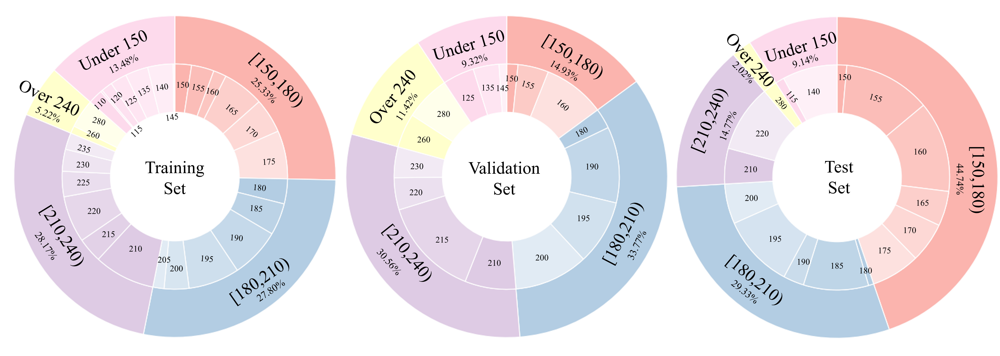
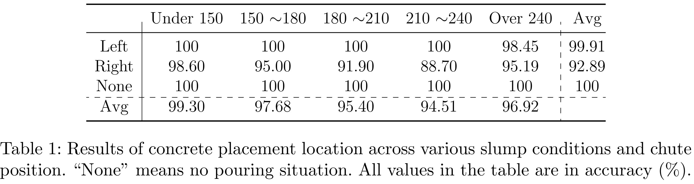
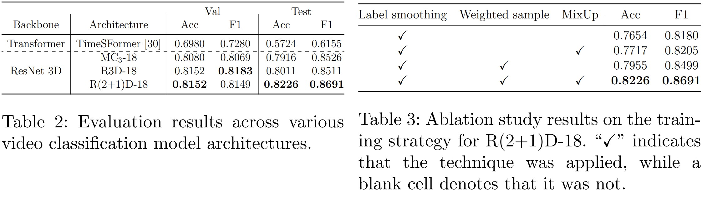
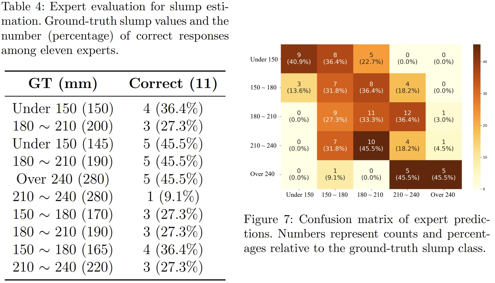

SlumpGuard: An AI-Powered Real-Time System for Automated Concrete Slump Prediction via Video Analysis
Abstract
Concrete workability is essential for construction quality, with the slump test being the most widely used on-site method for its assessment. However, traditional slump testing is manual, time-consuming, and highly operator-dependent, making it unsuitable for continuous or real-time monitoring during placement. To address these limitations, we present SlumpGuard, an AI-powered vision system that analyzes the natural discharge flow from a mixer-truck chute using a single fixed camera. The system performs automatic chute detection, pouring-event identification, and video-based slump classification, enabling quality monitoring without sensors, hardware installation, or manual intervention. We introduce the system design, construct a site-replicated dataset of over 6,000 video clips, and report extensive evaluations demonstrating reliable chute localization, accurate pouring detection, and robust slump prediction under diverse field conditions. An expert study further reveals significant disagreement in human visual estimates, highlighting the need for automated assessment.
Overview
Method
Example 1: 150 ~ 180 (Slump 150mm)
Example 2: 180 ~ 210 (Slump 200mm)
Example 3: Under 150 (Slump 145mm)
Example 4: 180 ~ 210 (Slump 190mm)
Example 5: Over 240 (Slump 280mm)
Example 6: 210 ~ 240 (Slump 230mm)
Example 7: 150 ~ 180 (Slump 170mm)
Example 7: 180 ~ 210 (Slump 190mm)
Example 9: 150 ~ 180 (Slump 165mm)
Example 10: 210 ~ 240 (Slump 220mm)
We constructed a dataset of 6,443 video clips capturing real concrete pouring from mixer-truck chutes. All videos were recorded using a stereo camera, producing two synchronized viewpoints per experiment, and each 10-second clip contains detailed observations of chute-level flow behavior. Ground-truth slump values were obtained through traditional slump testing to ensure accurate supervision. Using this dataset, we also conducted an expert evaluation study, where experienced engineers visually estimated slump values, revealing substantial expert variability and demonstrating the need for automated assessment.
Method

Our SlumpGuard pipeline.
Stage 1 (Chute Detection): The system automatically detects the mixer-truck chute using an oriented object detector and tracks the chute region over time. Once the chute location stabilizes, the region is fixed to minimize computation and to isolate the relevant pouring area.
Stage 2 (Pouring Location & Timing Detection): To determine when and from which chute the concrete begins to flow, we analyze motion using optical flow. By tracking the center point of the chute region and checking when it crosses the bottom boundary, the system identifies the exact drop timing and active chute.
Stage 3 (Slump Prediction): After detecting the pouring moment, the system extracts a short video segment of the flowing concrete and feeds it into a 3D video classification model. The predicted slump range is aggregated over multiple clips using majority voting, enabling stable, real-time slump estimation.
Results
Statistics of our dataset
Pouring placement Accuracy
Slump classification Accuracy
Human Evaluation
YOLO Results
BibTeX
@article{kim2025slumpguard,
title={SlumpGuard: An AI-Powered Real-Time System for Automated Concrete Slump Prediction via Video Analysis},
author={Kim, Youngmin and Oh, Giyeong and Youm, Kwangsoo and Yu, Youngjae},
journal={arXiv preprint arXiv:2507.10171},
year={2025}
}Contact
Please contact us if you have any questions or feedback.
Or you can send me an email directly: winston1214@yonsei.ac.kr